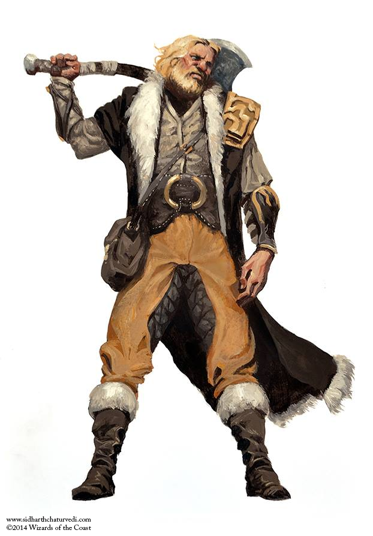

Clase jugable
Bárbaro
Un humano alto y salvaje, envuelto en pieles y asiendo su
hacha, atraviesa, con largas zancadas, una tormenta de nieve.
Se ríe mientras carga contra el gigante de escarcha que se ha
atrevido a cazar los rebaños de alces de su pueblo. Una semiorca
gruñe a su nuevo rival, el último en desafiar su autoridad
sobre los miembros de la tribu. Está lista para romperle el cuello
con las manos desnudas, como ya hizo con los seis contrincantes
anteriores.
Echando espumarajos por la boca, un enano estrella su
yelmo contra el rostro de un drow, para inmediatamente después
girarse y hundir su codo acorazado en el estómago de otro
enemigo.
Estos bárbaros, a pesar de sus diferencias, tienen algo en común:
su furia. Una ira desenfrenada, insaciable e irreflexiva. No
se trata de una simple emoción, pues esta ira es similar a la ferocidad
del depredador acorralado, el asalto implacable de la
tormenta o la agitada confusión del mar.
Para algunos bárbaros, la furia emana de la comunión con
fieros espíritus animales, mientras que otros dan salida a sus reservas
de ira apenas contenida, desatándola contra un mundo
lleno de sufrimiento. Todos los bárbaros sienten su furia como
una energía que no solo alimenta su agresividad en combate,
sino que también les proporciona sus increíbles reflejos, resistencia
y proezas de fuerza.

Instinto primordial
Los habitantes de pueblos y ciudades se enorgullecen de sus civilizadas
costumbres, que los distinguen de los animales, como
si rechazar la propia naturaleza fuera señal de superioridad. Sin
embargo, para un bárbaro la civilización no es una virtud, sino
una muestra de debilidad. Los fuertes abrazan su naturaleza
animal; sus instintos agudos, su físico primordial y su furia desencadenada.
Los bárbaros no se encuentran cómodos cuando
están rodeados por muros o multitudes. Medran en las tierras
salvajes que son su hogar; las tundras, selvas o praderas en las
que sus tribus habitan y cazan.
Los bárbaros cobran vida en media del caos del combate.
Pueden entrar en un estado de locura berserker en el que la
furia les domina, otorgándoles una fuerza y resistencia sobrehumanas.
Un bárbaro tan solo puede recurrir a sus reservas
de ira unas pocas veces entre descansos, pero estos escasos
arrebatos suelen ser más que suficientes para derrotar a cualquier
amenaza que pueda presentarse.
Una vida de peligros
No todos los miembros de las tribus llamadas “bárbaras” por
los vástagos de las sociedades civilizadas poseen la clase “bárbaro”.
Es tan poco común encontrar un auténtico bárbaro en estas
culturas como lo es dar con un guerrero habilidoso en una
ciudad, ya que ambos desempeñan funciones similares: proteger
a su pueblo y servir como líderes en tiempos de guerra. La
vida en los lugares más salvajes del mundo está llena de dificultades:
tribus rivales, un clima hostil y monstruos terroríficos.
Por ello, los bárbaros se lanzan de cabeza hacia el peligro para
que su pueblo no tenga que hacerlo.
El valor frente a la adversidad de los bárbaros les convierte
en aventureros excelentes. Muchas veces sus tribus de origen ya
eran nómadas, por lo que la vida del aventurero, que impide
echar raíces, no representa una molestia para ellos. Algunos
bárbaros echan de menos las estructuras familiares de la tribu,
muy estrechamente unidas, pero acaban reemplazándolas por
los lazos forjados con el resto de los miembros de sus grupos de
aventureros.
Rasgos de clase
Como bárbaro, obtienes los siguientes rasgos de clase.
Puntos de golpe
Dados de Golpe: 1d12 por nivel de bárbaro.
Puntos de Golpe a nivel 1: 12 + tu modificador por
Constitución
Puntos de Golpe a niveles superiores: 1d12 (o 7) + tu modificador
por Constitución por cada nivel de bárbaro por encima
del primero.
Competencias
Armadura: armaduras ligeras y medias, escudos.
Armas: armas sencillas y marciales.
Herramientas: ninguna.
Tiradas de salvación: Fuerza, Constitución.
Habilidades: elige dos de entre Atletismo, Intimidación, Naturaleza,
Percepción, Supervivencia y Trato con Animales
Equipo
Además del que obtengas por tu trasfondo, empiezas con el siguiente
equipo:
- (a) un hacha a dos manos o (b) cualquier arma cuerpo a cuerpo marcial.
- (a) dos hachas de mano o (b) cualquier arma sencilla.
- Un paquete de explorador y cuatro jabalinas.
Furia
Cuando estás en medio de un combate luchas con una ferocidad
primordial. Durante tu turno, puedes usar tu acción adicional
para dejarte llevar por la furia.
Mientras estés enfurecido, obtendrás, siempre y cuando no
lleves armadura pesada, los siguientes beneficios:
- · Tienes ventaja en las pruebas de Fuerza y las tiradas de salvación de Fuerza.
- · Cuando haces un ataque con arma cuerpo a cuerpo utilizando Fuerza, ganas un bonificador a la tirada de daño que aumenta según subes de nivel como bárbaro.
- · Posees resistencia al daño contundente, cortante y perforante.
Si normalmente eras capaz de lanzar conjuros, no podrás lanzarlos ni concentrarte en ellos mientras estés enfurecido. Tu furia dura 1 minuto, aunque acabará antes de este tiempo si quedas inconsciente, o si terminas tu turno sin haber atacado a una criatura hostil o sin haber recibido daño desde tu turno anterior. Si lo deseas, también puedes finalizar tu furia empleando una acción adicional, durante tu turno. Una vez te hayas enfurecido tantas veces como puedas, tendrás que llevar a cabo un descanso largo antes de poder dejarte llevar por la furia de nuevo.
Defensa sin Armadura
Si no estás portando armadura alguna, tu Clase de Armadura
será 10 + tu modificador por Destreza + tu modificador por
Constitución. Podrás usar escudo sin tener que renunciar a este
beneficio.
Ataque Temerario
A partir de nivel 2, puedes abandonar por completo tu defensa
para atacar con una fiereza desesperada. Cuando vayas a realizar
el primer ataque de cada turno, puedes decidir atacar temerariamente.
Si eliges hacer esto, tendrás ventaja en las tiradas
de ataque con armas cuerpo a cuerpo que utilicen Fuerza durante
este turno, pero las tiradas de ataque que te tengan como
objetivo hasta el final de tu siguiente turno también tendrán ventaja.
Sentir el Peligro
A nivel 2, eres capaz de percibir de forma casi sobrenatural
cuando lo que te rodea no es como debería ser. Gracias a ello se
te da bien evitar el peligro.
Tienes ventaja en las tiradas de salvación de Destreza para
evitar efectos que puedas ver, como trampas o conjuros. No obtendrás
este beneficio si estás cegado, ensordecido o incapacitado.
Senda Primordial
A nivel 3 debes escoger una senda, que determinará la naturaleza
de tu furia. Elige entre la Senda del Berserker y la Senda
del Guerrero Totémico. Ambas se detallan al final de la descripción
de esta clase. Esta elección te proporciona ciertos rasgos
cuando alcanzas los niveles 3, 6, 10 y 14.
Mejora de Característica
Cuando asciendas a los niveles 4, 8, 12, 16 y 19, podrás elegir
una puntuación de característica y aumentarla en 2 o dos puntuaciones
de característica y aumentarlas en 1 cada una. Como
es habitual, no puedes aumentar una puntuación de característica
por encima de 20.
Ataque Adicional
A partir de nivel 5, cuando lleves a cabo la acción de Atacar durante
tu turno, podrás hacer dos ataques en lugar de uno.
Movimiento Rápido
A partir de nivel 5, si no estás llevando armadura pesada, tu velocidad
aumenta en 10 pies.
Instinto Salvaje
A partir de nivel 7, tus instintos están tan afilados que tienes
ventaja en las tiradas de iniciativa.
Además, aunque estés sorprendido al empezar un combate,
podrás actuar con normalidad a lo largo de tu primer turno si no
estás incapacitado y te enfureces antes de hacer cualquier otra
cosa durante dicho turno.
Crítico Brutal
A partir de nivel 9, cuando hagas un crítico con un ataque
cuerpo a cuerpo, podrás tirar uno de los dados de daño del arma
una vez más y añadir el resultado al daño adicional causado.
Podrás tirar dos dados adicionales a partir de nivel 13 y tres
dados adicionales a partir de nivel 17.
Furia Implacable
A partir de nivel 11, tu furia te permite seguir luchando incluso
tras sufrir heridas graves. Si tus puntos de golpe se reducen a 0
mientras estás enfurecido, pero no mueres instantáneamente,
puedes hacer una tirada de salvación de Constitución CD 10. Si
tienes éxito, pasas a tener 1 punto de golpe en lugar de 0.
Cada vez que usas este rasgo la CD aumenta en 5 puntos,
pero si finalizas un descanso corto o largo, dicha CD vuelve a
ser 10.
Furia Persistente
A partir de nivel 15, tu furia es tan violenta que solo terminará
antes de tiempo si quedas inconsciente o eliges finalizarla voluntariamente.
Poderío Indómito
A partir de nivel 18, si el resultado de una de tus pruebas de
Fuerza es inferior a tu puntuación de Fuerza, puedes usar esa
puntuación en lugar del resultado.
Campeón Primordial
Cuando llegas a nivel 20 encarnas el poder de la naturaleza salvaje.
Tus puntuaciones de Fuerza y de Constitución aumentan
en 4. Tu valor máximo para dichas puntuaciones pasa a ser 24.
Sendas primordiales
La furia arde en el corazón de todos los bárbaros, cual horno que los mueve a alcanzar la grandeza. Sin embargo, diferentes bárbaros tienen varias teorías en lo que al origen de su furia respecta. Para algunos, se trata de una reserva interna en la que el dolor, la pena y la ira se entremezclan, forjando una ira dura como el acero. Otros la entienden como una bendición espiritual; un regalo de un tótem animal.
Senda del Berserker
Para ciertos bárbaros la furia es el medio para alcanzar un fin:
la violencia. La Senda del Berserker se asienta en una rabia sin
cortapisas, cubierta de sangre. Al dejarte llevar por la furia del
berserker experimentarás el entusiasmo que proporciona el
caos del combate, sin reparar en tu propia seguridad o bienestar.
Frenesí
A partir del momento en el que escoges esta senda, a nivel 3,
puedes abandonarte al frenesí cuando te enfurezcas. Si eliges
hacer esto, mientras estés enfurecido podrás hacer un ataque
con arma cuerpo a cuerpo como acción adicional durante cada
uno de tus turnos (empezando por el siguiente a haberte enfurecido).
A cambio, cuando tu furia termine sufrirás un nivel de
cansancio .
Furia Irracional
A partir de nivel 6, no puedes ser asustado ni hechizado mientras
estés enfurecido. Si estabas asustado o hechizado antes de
enfurecerte, dejarás de estarlo temporalmente, mientras dure la
furia.
Presencia Intimidante
A partir de nivel 10, puedes usar tu acción para asustar a alguien
con tu mera presencia. Para hacer esto, elige a una criatura
que puedas ver a 30 pies o menos de ti. Si dicha criatura
puede verte u oírte, deberá superar una tirada de salvación de
Sabiduría (CD 8 + tu bonificador por competencia + tu bonificador
por Carisma) o estará asustada de ti hasta el final de tu siguiente
turno. En cada uno de los turnos subsiguientes, podrás
utilizar tu acción para alargar la duración de este efecto sobre la
criatura asustada hasta el final de tu siguiente turno. Este efecto
termina si la criatura termina su turno fuera de tu línea de visión
o a 60 pies o más de ti.
Si tiene éxito en su tirada de salvación, no podrás volver a
usar este rasgo sobre esa criatura hasta que pasen 24 horas.
Represalia
A partir de nivel 14, cuando recibas daño de una criatura que se
encuentre a 5 pies o menos de ti, podrás utilizar tu reacción
para hacer un ataque con arma cuerpo a cuerpo contra ella.
Senda del Guerrero Totémico
La Senda del Guerrero Totémico es un viaje espiritual, mediante el cual el bárbaro acepta a un espíritu animal como guía, protector e inspiración. Durante el combate, tu espíritu totémico te llena de poder sobrenatural, añadiendo energías mágicas a tu furia de bárbaro. La mayoría de las tribus bárbaras consideran que cada animal totémico está unido a un clan concreto. En estas tribus no suele ser frecuente ver bárbaros con más de un espíritu animal como tótem, aunque siempre hay excepciones.
Buscador de Espíritus
Tu senda busca la armonía con el mundo natural, por lo que posees
un vínculo especial con las bestias. A nivel 3, cuando adoptes
esta senda, serás capaz de lanzar los conjuroshablar con los
animales ysentidos de la bestia , pero únicamente como rituales,
tal y como se describe en el capítulo 10: “Lanzamiento de conjuros”.
Espíritu Totémico
A nivel 3, cuando escoges esta senda, también eliges un espíritu
totémico y obtienes su rasgo asociado. Debes fabricar o hacerte
con un tótem físico (un amuleto o adorno similar) confeccionado
a partir de pelaje, plumas, garras, dientes o huesos del animal
totémico. Si quieres, también puedes desarrollar pequeños rasgos
físicos que recuerden a tu espíritu totémico. De este modo,
si tu espíritu totémico es un oso, podrías ser especialmente velludo
o tener la piel gruesa, mientras que, si tu tótem es el
águila, quizá tus ojos se vuelvan de un color amarillo brillante.
Tu animal totémico podría no ser exactamente uno de los
enumerados a continuación, sino uno emparentado con alguno
de ellos, pero más apropiado a tu tierra natal.
Podrías, por ejemplo, elegir un halcón o buitre en vez de un
águila.
Águila. Mientras estés enfurecido y no lleves armadura pesada,
el resto de las criaturas tendrán desventaja en sus ataques
de oportunidad contra ti y podrás usar la acción de Correr como
acción adicional durante tu turno. El espíritu del águila te convierte
en un depredador capaz de moverse sin dificultad en medio
del combate.
Lobo. Mientras estés enfurecido, tus aliados tendrán ventaja
en las tiradas de ataque cuerpo a cuerpo contra cualquier criatura
que te sea hostil y esté a 5 pies o menos de ti. El espíritu
del lobo te transforma en un líder de cazadores.
Oso. Mientras estés enfurecido, posees resistencia contra
todo el daño, excepto el psíquico. El espíritu del oso te da la dureza
necesaria para aguantar cualquier castigo.
Semblanza de la Bestia
A nivel 6 recibes un poder mágico basado en un tótem animal
de tu elección. Puedes volver a escoger el mismo animal que
elegiste a nivel 3 o uno distinto.
Águila. Obtienes la agudeza visual de un águila. Puedes ver
hasta a 1 milla de distancia sin problemas y eres capaz de distinguir
incluso los detalles más pequeños de los objetos que estén
a 100 pies o menos de ti. Además, no sufres desventaja al
hacer pruebas de Sabiduría (Percepción) con luz tenue.
Lobo. Consigues el instinto para la caza de un lobo. Eres capaz
de rastrear a otras criaturas mientras viajas a un ritmo rápido
y puedes moverte con sigilo mientras viajas a un ritmo normal.
Oso. Obtienes el poderío de un oso. Tu capacidad de carga
se duplica, tanto para el peso que puedes llevar encima como
para el que puedes empujar, arrastrar o levantar. Además, tienes
ventaja en las pruebas de Fuerza hechas para levantar, romper,
empujar o tirar de objetos.
Caminante Espiritual
A nivel 10 eres capaz de lanzar el conjurocomunión con la naturaleza
, pero solo como ritual. Cuando lo hagas, será una versión
espiritual de uno de los animales que escogiste para los rasgos
Espíritu Totémico o Semblanza de la Bestia quien te comunique
la información que buscas.
Armonía Totémica
A nivel 14 recibes un poder mágico basado en un tótem animal
de tu elección, Puedes volver a escoger uno de los animales que
elegiste anteriormente u otro distinto.
Águila. Mientras estés enfurecido, tendrás una velocidad volando
igual a tu velocidad caminando actual. Esta capacidad se
basa en impulsos breves, por lo que caerás si terminas tu turno
en el aire y no hay nada que te sujete.
Lobo. Mientras estés enfurecido, cuando impactes a una
criatura Grande o más pequeña con un ataque con arma cuerpo
a cuerpo durante tu turno, podrás usar una acción adicional
para derribarla.
Oso. Mientras estés enfurecido, cualquier criatura que te sea
hostil que se encuentre a 5 pies o menos de ti tendrá desventaja
en las tiradas de ataque contra objetivos que no seáis ni tu ni
otro personaje con este rasgo. Los enemigos que no puedan
verte ni oírte o no puedan ser asustados son inmunes a este
efecto.